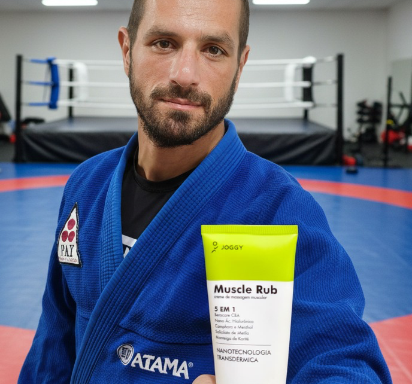
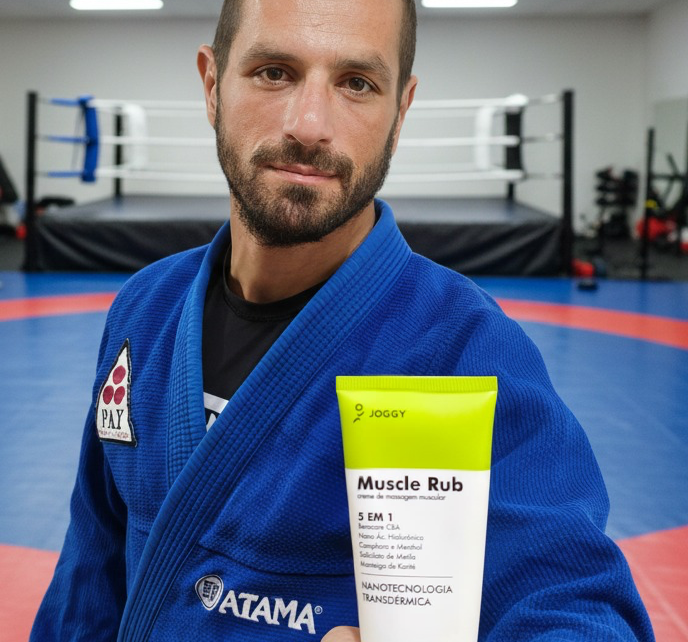

REGEN5™
O PODER
REGENERADOR!
Tecnologia exclusiva da JOGGY
que combina 5 benefícios
em um só produto.

Tecnologia exclusiva da JOGGY
que combina 5 benefícios
em um só produto.


 



A Joggy Muscle Rub entrou de vez na minha rotina. Alívio imediato, pernas leves e pronta pra outro treino! Um produto que realmente cumpre o que promete!
Funciona de verdade! Alívio rápido, pele sem aquele aspecto melado e pegajoso… Sou praticante de Triathlon e Ironman 70.3 e o JOGGY tem feito diferença na minha recuperação! Não fico mais sem!

Essa pomada age muito rápido, foi o primeiro efeito que ela me causou... Estava sentindo uma dor na posterior da coxa, passei e melhorou, muito rápido... Agora virou minha rotina de recuperação!
Passando para agradecer à Joggy por tamanha transformação no mercado esportivo. Que produto incrível! Depois que comecei a usar, jogo mais de duas horas seguidas sem sentir dores na musculatura. É outro nível de conforto e performance!
Sabe aquele produto que cumpre o que promete? É esse. Textura leve (não deixa a pele grudenta e absorve rápido) e um alívio quase imediato. A recuperação é real — virou meu aliado diário pós-treino.
Surreal esse Muscle Rub da Joggy, nunca vi nada igual! Tá fazendo muita diferença na minha rotina de surf.

A joggy virou a minha grande aliada na recuperação muscular. Tenho utilizado depois das corridas e o peso nas pernas simplesmente somem. O produto funciona de verdade, é maravilhoso. Não fico mais sem 💚 🏃🏿♂
Comecei a usar a pomada Joggy depois dos treinos longos. E realmente ajuda. A sensação de peso nas pernas diminui, e a recuperação parece mais rápida. Passo depois do banho, principalmente nas panturrilhas e coxas, e no outro dia já acordo bem melhor.
Eu usei, testei e melhorou, não me falaram que é bom... Foi uma melhora instantânea! A JOGGY entrou na minha rotina e virou essencial. Recuperação real. Vamoooss 🤘

Sensacional! Tenho usado para liberação miofascial nos meus pacientes e têm sido um sucesso! Só elogios! Não largo mais mão da JOGGY!!!
Faço corrida de montanha e uso esse produto no pré e pós treino. O resultado é surreal! Recuperação como nenhum outro! Nunca vi nada parecido até o momento!
Estudo e atendo por muitas horas, em posições desconfortáveis. Sinto muita dor na cervical e nos ombros, só com o Muscle Rub consigo manter a rotina de estudante de medicina.
A JOGGY virou minha aliada número 1 na recuperação muscular! Desde que comecei a usar, meus pós-treinos ficaram muito mais eficientes e sinto meu corpo respondendo como nunca — menos dores e performance real.
Funcional num dia, corrida no outro. Braços sempre doloridos… até usar JOGGY antes de dormir. No outro dia? Zero dor! Funciona de verdade!
"Surreal, essa pomada! Tem me ajudado demais e se tornou minha aliada número 1 no pós surf. Me ajuda na recuperação muscular da panturrilha e, principalmente, no braço. Não tem como usar e não recomendar"
Recupere-se mais rápido, treine melhor e nunca pare.
O JOGGY Muscle Rub combina nanotecnologia e ativos naturais para alívio imediato, regeneração e performance de alto nível.
Selecione a quantidade:
Toque no botão abaixo e fale com uma de nossas consultoras!